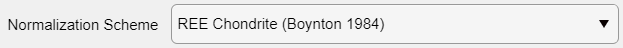
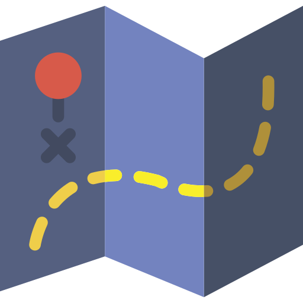
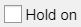
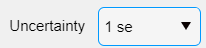

Help file version 03.12.2021 by M. Tedeschi & P. Lanari
This help file contains a description of the Spider Module which can be used to generate spider plots.
Step 1 Select the normalisation data from the Normalisation drop down menu 
.Step 2 (optional) use the Auto Contrast button to automatically adjust the colour range.
Step 3 Select pixels to plot using one of the ROI types: Circle , ROI or Path .
Step 4 (optional) Activate the Hold on  mode to select multiple regions of interest. Simply repeat step 3 to add more selections (circle or ROI). It is possible to edit and move any selection and the plot will be updated.
Note: Uncertainties are plotted on the graph. It is possible to choose to display '1se' (1sd/sqrt(N)) or '1sd' .